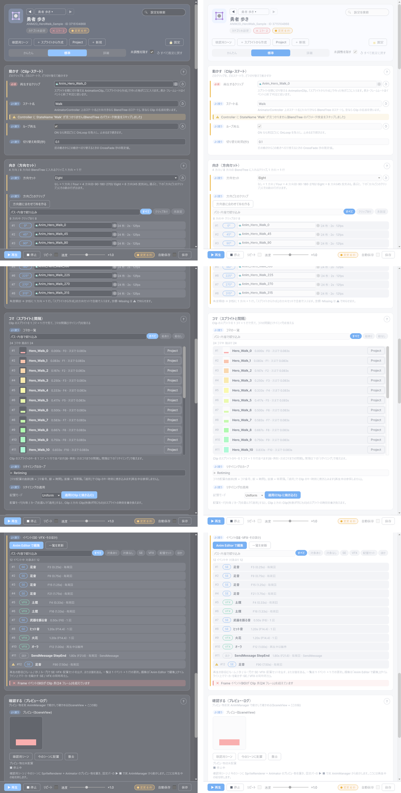
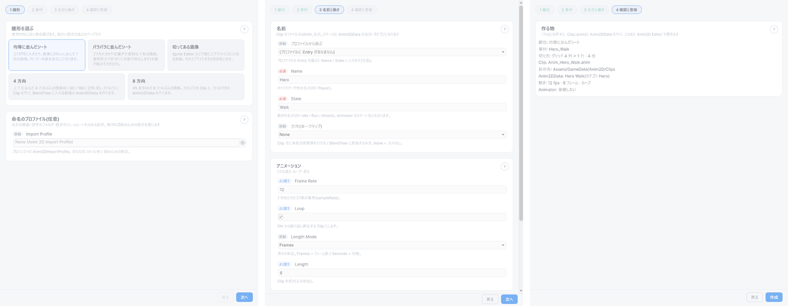
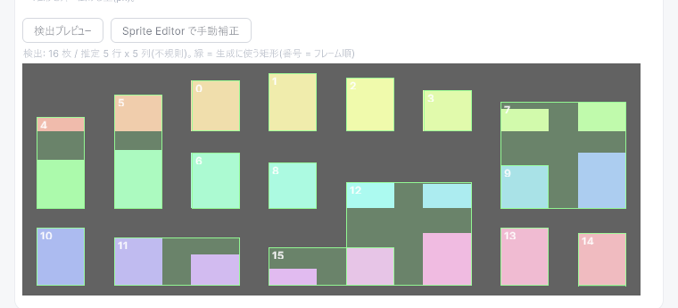

最終更新日: 2026-10-13
2D アニメーションデータ（Anim2DData）は「このパラパラ絵（スプライトの Clip）を、どのステート・レイヤーで、方向ありなら 4 方向 / 8 方向のどれとして再生するか」をまとめた再生単位です。3D のアニメーションデータ（AnimData）の仲間なので、再生の仕組み・Frame/Time イベント・切り替え時の混ざり（CrossFade）はすべて 3D と共通です。
スプライトシート（コマ絵を 1 枚の画像に並べたもの）を渡すと、「スプライトから作成」ウィザードが次をまとめて行います。
Anim_{Name}_{State}、方向ありは末尾に角度）.anim）を保存する。保存先フォルダも自動で作られますx / y パラメータも自動追加できあがった Anim2DData は Anim2D Editor で見て整えます。
Tools > D-Drive > Editors > Animation (2D)（ウィンドウ名は「Anim2D Editor」）。Project で Anim2DData を選んでいれば、そのまま編集対象として読み込まれます。何も選んでいないときは、ウィンドウの真ん中の枠にドロップするか、最近使ったものから選びますTools > D-Drive > Editors > Animation (2D) を開き、「＋ 新規作成」（または「＋ スプライトから作成」）を押す。ウィザードが開きますAnim_Player_Idle と Anim2DData Player Idle ができ、ウィザードは閉じて Anim2D Editor がその Anim2DData を開きます
Anim.Play(ID, animator) を呼ぶだけです。カタログも 3D と共通（AnimCatalog）です。Anim2D Editor の「＋ スプライトから作成」（何も選んでいないときは「＋ 新規作成」）で開きます。画像から Clip と Anim2DData を作るためのウィンドウで、1 雛形 → 2 素材 → 3 名前と動き → 4 確認と登録の順に「次へ」で進みます（「戻る」で前のページへ。入力が足りないページは「次へ」が押せず、理由が上に出ます）。

| 要素 | 説明 |
|---|---|
| 均等に並んだシート | コマの大きさが揃い、縦横にきれいに並んだ 1 枚の画像。Columns × Rows で等分割します（Grid） |
| バラバラに並んだシート | コマの大きさや位置が不揃いな 1 枚の画像。透明な背景からコマの矩形を自動検出します（Automatic） |
| 切ってある画像 | 既に Sprite Editor などで切り分け済みの画像から、そのコマを拾うだけです（Existing） |
| 4 方向 / 8 方向 | 方向ごとの画像（4 方向 = 0 / 90 / 180 / 270 度、8 方向 = 45 度刻み）をまとめて処理し、角度別の Clip と、方向付きの Anim2DData を作ります（Directions = Four / Eight） |
| 命名のプロファイル（任意） | 名前の候補（Name と State の組み合わせ）と Clip の保存先を持つ設定ファイル（Import Profile）。空にするとプロジェクト内の既定プロファイルを自動で探し、無ければ保存されない組み込みの既定が使われます |
| 要素 | 説明 |
|---|---|
| Texture | 切る前の画像（方向なしの雛形）。必須 |
| Columns / Rows / Sprite Count | Grid 用。列数・行数と、左上から行順に使うコマ数（Columns × Rows を超えると切り詰め）。既定 4 / 1 / 4。1 未満は 1 になります |
| Min Sprite Size / Extrude | Automatic 用。検出する矩形の最小サイズ（既定 16。小さいゴミを拾わないため）と、矩形の外側に足す余白（既定 0） |
| 検出プレビュー | 自動検出を実行し、画像の上に結果を重ねて表示します。緑の枠 = 生成に使う矩形、枠の番号 = コマの順番。結果は「検出: N 枚 / 推定 R 行 x C 列(規則的グリッド|不規則)…」のように出ます。表示の縮尺は元画像のサイズ基準なので、Max Size で縮小される大きな画像でも枠はずれません。この時点では画像の設定は書き換わりません |
| Sprite Editor で手動補正 | 検出した矩形を画像の Importer に書き込んでから Unity の Sprite Editor を開きます（検出前は押せません）。直して Apply したら、雛形は「切ってある画像」に切り替わっているので「次へ」で進めます。2D Sprite パッケージ（com.unity.2d.sprite）が無いと開けません（案内メッセージが出ます） |
| 切り方（方向の雛形） | 方向ごとの画像すべてに同じ切り方（Grid / Automatic / Existing）を使います。切り方ごとの数値は上の行と同じです |
| 0°〜315°（方向の雛形） | 方向ごとの画像。空欄の方向は作られません（1 つ以上は必須） |

| 要素 | 説明 |
|---|---|
| プロファイルから選ぶ | Import Profile の Entry 一覧。選ぶと「Name」と最初の State が入ります。Entry が無いと「(プロファイルに Entry がありません)」だけが出ます |
| Name / State | どちらも必須。Clip 名・Anim2DData の名前・カテゴリ（フォルダ分け）に使われます。空のあいだは「次へ」が押せません |
| 方向(単一クリップ) | 方向なしの雛形のとき、この 1 本を何度の Clip として扱うか。FromName = 画像名の末尾から自動判定（下の「命名規約」）/ None / Deg0…Deg315。角度があると BlendTree にその角度で登録されます |
| Frame Rate / Loop | 1 秒あたりのコマ数（既定 12）とループ再生（既定 ON） |
| Length Mode / Length | Clip の長さ。Frames なら「Length フレーム分」（既定 8 = 8 ÷ Frame Rate 秒）、Seconds なら秒 |
| AnimatorController / Layer（任意） | 入れると BlendTree 登録まで行います。空のままなら登録は飛ばされ、Clip と Anim2DData だけができます（あとから Controller に手で組み込む前提） |
雛形・素材・切り方・Clip 名・保存先・Anim2DData の名前とカテゴリ・動き・Animator への登録有無を 1 画面で確認します。「作成」で次を行います。
| 部品 | 説明 |
|---|---|
| ◀ ▶ と名前のボタン | 同じカテゴリの Anim2DData を順に切り替えます。名前のボタンで最近使ったものも選べます。 |
| 設定を検索 | 欄の名前・説明・検索語に加えて、コマ・方向・イベントの名前にも一致する設定だけを出します（例: リタイミング / 8方向 / SE）。×で解除。 |
| エラー・警告・変更のチップ | 検証の結果と、まだ保存していない変更の数。変更のチップを押すと「変更した設定だけ」を表示します。 |
| 確認用シーン | 確認用シーンを開き（無ければ生成）、SpriteRenderer 付きのプレビュー物を置きます。右クリックで、いま開いているシーンにそのまま置く / 本配置にもできます。 |
| ＋ スプライトから作成 | 作成ウィザードを開きます。 |
| Project / ＋ 新規 | 対象を Project ウィンドウでハイライト / ID・表示名・カテゴリだけの空の Anim2DData を作ってこのエディターで開く（Clip は入っていません。画像からまとめて作るなら「＋ スプライトから作成」）。 |
| 固定 | ON にすると、Project ウィンドウで別のものを選んでも対象が切り替わりません。 |
| かんたん / 標準 / 詳細 | 見せる欄の量。かんたん=必須の欄だけ（再生するクリップ）/ 標準=普段触る欄まで / 詳細=すべて（レイヤー・マスク・BlendTree のパラメータ名・動作の取り決め）。 |
| 未調整を隠す | 詳細モードで、既定値のままの設定をカードごとの「未調整の設定」に折りたたみます。 |
| ↺ すべて既定に戻す | 既定値と違う設定をすべて既定に戻します（確認あり。管理情報は対象外）。各欄の右の ↺ でその欄だけ戻せます。 |
| 操作 | 説明 |
|---|---|
| ▶ 再生 / ■ 停止 | ゲームを実行せずにその場で再生。プレビュー物が未配置なら自動で置いてから動かします。SceneView と「確認する」カードの絵で見てください。再生中の ▶ は最初からやり直します。■ 停止はその瞬間の絵のまま止まります。 |
| リピート | ON にすると、終わるたびに自動でもう一度再生します。 |
| 速度 | 再生速度（0.1〜2 倍）。右の「×1.0」を押すと等倍に戻ります。 |
| 変更 N 件 / 保存 | まだ保存していない変更の数。「保存」でアセットに書き込みます（保存のたびに版数が進みます）。ウィンドウを閉じる・別のものに切り替えるときも、未保存なら確認が出ます。 |
| 自動保存 | ON にすると、編集が止まって 1 秒たつと自動で保存します。 |
Ctrl+Z / Ctrl+Y で戻せます。
どのクリップを、どのステートで、どう切り替えて動かすか。
| 欄 | 説明 |
|---|---|
| 再生するクリップ（必須） | 再生する Clip。長さ・フレームレートはイベント（Frame/Time）と終了判定に使います。Frame Rate は Clip から読まれます（未設定なら 30 扱い） |
| ステート名 / レイヤー | Animator Controller 上のステート名（CrossFade の対象。方向ありなら BlendTree のステート。空なら Clip の名前）とレイヤー番号 |
| ループ再生 | ON なら周回ごとに OnLoop が出て、止める指示があるまで続きます |
| 切り替え時間(秒) | 切り替え時の混ざり秒数（既定 0.1） |
| アバターマスク / 手足 IK / 表情 BlendShape | 3D 向けの欄（詳細モード）。2D では通常使いません |
| 動作の取り決め | Pool 上限・ポーズ時の挙動・ネット配送など（詳細モード）。Loop のときは Pool 上限を設定します |
4 方向 / 8 方向の BlendTree に入れるクリップ。方向なしのデータでは使いません。
| 欄 | 説明 |
|---|---|
| 方向セット | None = 方向なし / Four = 0・90・180・270 / Eight = 45 度刻み。Four / Eight のときは「ステート名」の BlendTree に方向ごとのクリップが登録されている前提で動きます。選ぶと、下の一覧にその数の行が出ます |
| 方向ごとのクリップ | 1 方向 = 1 行の一覧（# ・角度のチップ・クリップの欄・「24 枚 · 2s · 12fps」の要約）。クリップ欄を直接入れ替えられます（Ctrl+Z で戻せます）。空欄・Missing の行には ⚠ が付きます。一覧の上に絞り込み（検索・「クリップあり / 未設定」）と件数（「8 方向中 クリップあり 8」）。「方向数に合わせて枠を作る」で、足りない枠だけを用意します（既に入っているクリップは動かしません）。Four は 4 本、Eight は 8 本必要です |
| BlendTree の X / Y パラメータ名 | 向きを渡す Animator のパラメータ名（詳細モード）。既定は x / y（ツールの規約）。方向ありで空だと Error です |
Clip のスプライトのキーを見て、コマの間隔を整えます。
| 欄 | 説明 |
|---|---|
| コマの一覧 | Clip のスプライトのキーを1 コマ = 1 行で並べます（# ・絵のサムネイル・スプライト名・「0.083s · F1 · 次まで 0.083s」の要約・Project で表示）。20 行を超えると一覧の中でスクロールします。一覧の上に絞り込みと件数（「24 コマ中 絵あり 24」）。Sprite の参照が切れたコマには ⚠ が付きます。Clip を入れ替える・リタイミングを適用すると自動で更新されます |
| リタイミングのカーブ | コマの配置の曲線（横 = コマ番号、縦 = 時間）。共通の ValueDef 欄（「モード」「定数」「Parametric種別」「Ease」「Bezier P1 / P2」「From」「To」「カーブ」「Normalized」など）。直線 = 等間隔。ゲーム中には参照されません（Clip のキー時刻に焼き込むためのものです）。初期値は Constant(1) |
| リタイミングの適用 | 「配置モード」= Uniform（等間隔に戻す）/ Retiming（上のカーブで不均等に配置）を選び、「適用(Clip に焼き込む)」で主 Clip を書き換え、さらに同じコマ数の方向 Clip すべてに同じ配置をまとめて適用します。枚数が違う方向 Clip はスキップされ、結果は「適用 A / スキップ B」と欄の下とログに出ます。Ctrl+Z で戻せます。 |
再生の節目（フレーム / 秒 / ループ）に SE・VFX・配置セットを出す、または値を送るイベントの一覧です。
| 部品 | 説明 |
|---|---|
| イベントの一覧 | 1 イベント = 1 行の要約（# ・種類のチップ〔SE / VFX / 配置セット / ほか〕・対象の名前・「F4 (0.33s) · 毎周回」のような時刻と繰り返し）。Clip の長さを超えて発火しないイベントには ⚠ が付き、欄の下に検証のエラーが出ます。一覧の上に絞り込み（検索・「対象あり / 対象なし」・種類のチップ）と件数（「12 イベント中 対象あり 12」）。20 行を超えると一覧の中でスクロールします |
| Anim Editor で編集 | イベントを足す・時刻をタイムライン上のマーカーのドラッグで動かす・SE / VFX を同時に再生して確かめるときに押します。再生を止め、プレビュー物はシーンに残したまま Anim Editor に引き渡します（絵が消えないようにするため）。Anim Editor でも同じプレビュー物（SpriteRenderer + Animator）が動かす相手になります。戻ってきたあとは一覧が自動で更新されます |
| 一覧を更新 | SE / VFX アセットを追加・改名したあとに押すと、対象の名前を取り直します |
| 部品 | 説明 |
|---|---|
| プレビュー(SceneView) | ウィンドウ内には再生中の絵（プレビュー物の SpriteRenderer が持つスプライト。未配置なら Clip の最初のコマ）を映し、シーンには [D-Drive] Anim2D Preview（SpriteRenderer + Animator。シーンには保存されません）を置いて実際の再生経路で動かします。「確認用シーン」= 確認用シーン（VFX と共通）を開き（無ければ生成）プレビュー物を配置 / 「今のシーンに配置」= 開いているシーンやプレハブモードに置く / 「撤去」= プレビュー物を消す。状態は「プレビュー物は未配置」「プレビュー物を配置済み(SceneView を確認)」「● 再生中 N%(周回 N)」「■ 停止」「Anim Editor に引き渡し済み」などと出ます |
| イベントログ | 再生で発火したイベントと操作の最近 12 行（「ログを消す」で空にできます） |
表示名・カテゴリ（フォルダ分け）・説明・タグ・アイコン・担当者・仕様書 URL・変更メモ。ID・版数・最終更新者・最終更新日時は読み取り専用で一番下に出ます。
問題は、関係する欄の下にその場で出ます（どの欄にも当てはまらないものは一番下の「その他の検証」カード）。自動で直せるものには「修正」ボタンが付きます（例: BlendTree の x / y パラメータ不足）。ヒーローのチップにはエラーと警告の数が出ます。
| 項目 | 説明 |
|---|---|
| Directions（方向セット） | None = 方向なし / Four = 0・90・180・270 / Eight = 45 度刻み |
| Direction Clips | 角度順（0 / 45 / … / 315、Four なら 0 / 90 / 180 / 270）の Clip。ウィザードが自動で登録します（Four は 4 本、Eight は 8 本必要） |
| Param X Name / Param Y Name | BlendTree の向きパラメータ名。既定は x / y。方向ありで空だと Error |
| Retiming | コマ配置のカーブ。「適用」で Clip のキー時刻に焼き込むためのもので、ゲーム中には参照されません |
そのほか（Clip / ステート名 / レイヤー / ループ / 切り替え時間 / イベントなど）は 3D のアニメーションデータと共通です（Anim Editor のページ）。
Project の右クリック Create > D-Drive > Anim > Anim2D Import Profile で作ります（既定ファイル名 Anim2DImportProfile）。プロジェクト内の 1 つが自動で使われます。
| 項目 | 説明 |
|---|---|
| Entries（Name / States） | 名称（例: Player）と、その名称で使えるステート一覧（例: Idle, Run, Attack）。ウィザードの「プロファイルから選ぶ」に出ます |
| Default Clip Folder | 生成した Clip の保存先（既定 Assets/GameData/Anim2D/Clips） |
| Default Frame Rate / Default Directions | ツールチップ上は「既定」ですが、現状はウィザードの初期値（12 / なし）に反映されません。実際に効くのは Entries と Default Clip Folder です |
8 方向 BlendTree の向きを移動方向から自動で決めるコンポーネント。キャラの GameObject に付けて使います。Target（向きを書き込む Animator。空なら自身）/ Camera Relative（既定 ON。カメラの向き基準。Camera.main が無ければワールド基準）/ Smoothing（向きの平滑化秒。既定 0.08、0 で即時）/ Param X / Param Y（BlendTree のパラメータ名）/ Initial Direction（開始時の向き。上 = (0,1)）。プログラム側は移動ベクトルを渡すだけです。
| 対象 | 規則 |
|---|---|
| Clip 名 | 方向なし: Anim_{Name}_{State} / 方向あり: Anim_{Name}_{State}_{角度}（角度は 0 / 45 / 90 / 135 / 180 / 225 / 270 / 315） |
| 画像名の末尾の角度 | 「方向(単一クリップ)」を FromName にしたとき、画像名が _0 _45 … _315 で終わっていればその角度になります（例: player_run_90.png → 90°）。それ以外は方向なし扱い |
| Sprite（コマ）の名前 | {画像名}_{連番}（0 始まり）。Grid / Automatic 共通 |
| コマの順番 | Grid: 左上から右へ、行ごとに下へ。Automatic: コマの中心の高さで行に分け、行の中は左から右、行は上から下。Existing: Sprite Editor の並び（左上 → 右下）に揃えます |
| Clip の保存先 | Import Profile の Default Clip Folder（未設定なら Assets/GameData/Anim2D/Clips）。フォルダが無ければ作られます。同名があると Anim_X_Y 1.anim のように連番が付きます（上書きではありません） |
| Anim2DData の保存先と名前 | Assets/GameData/Anim2D/{カテゴリ}/ANIM2D_{カテゴリ}_{識別子}.asset。カテゴリ = Name、識別子 = Name + State を英数字にしたもの、表示名は「{Name} {State}」。ID の頭は ANIM2DID |
| やりたいこと | 設定 |
|---|---|
| 4 コマ横並びのシートから待機アニメ | ウィザード: 雛形「均等に並んだシート」、Columns=4 / Rows=1 / Sprite Count=4、Name / State を入力、Frame Rate=12、Loop ON、Length Mode=Frames / Length=4 →「作成」 |
| 隙間が不揃いなシートを切る | 雛形「バラバラに並んだシート」→ Texture を入れて「検出プレビュー」→ 緑枠と番号を確認 →「次へ」…「作成」 |
| 自動検出がずれたので手で直す | 「検出プレビュー」→「Sprite Editor で手動補正」→ Sprite Editor で直して Apply → 雛形が「切ってある画像」になっているので「次へ」…「作成」（2D Sprite パッケージが必要） |
| 8 方向キャラの歩きを一括で作る | 雛形「8 方向」→「0°」〜「315°」に各画像 → AnimatorController と Layer を指定 →「作成」で 8 本の Clip + BlendTree 登録 + Direction Clips が一度にできます |
| 攻撃の当たるコマで SE / VFX | 「合図（イベント）」カードの「Anim Editor で編集」→ タイムラインで「＋ 現在位置に SE」（Anim Editor 参照） |
| ためて素早く振る（コマ間隔を不均等に） | 「コマ」カード → 配置モード=Retiming → リタイミングのカーブの「モード」を Parametric にして Ease（EaseInOut など）を選ぶ →「適用(Clip に焼き込む)」。方向 Clip も同時に揃います |
| コマ間隔を等間隔に戻す | 配置モード=Uniform で「適用(Clip に焼き込む)」 |
| シーンで動きを確認する | 「確認用シーン」（または「今のシーンに配置」）→ 固定バーの「▶ 再生」。終わったら「撤去」 |
| 移動方向に合わせて自動で向きを変える | キャラに Anim2DFacing を付け、Camera Relative / Smoothing を調整。向きの計算はプログラム側が移動ベクトルを渡します |
該当する欄の下（または「その他の検証」）に出るもの（3D と共通の警告は Anim Editor のページも参照）。
| 表示 | 対処 |
|---|---|
| Clip が未生成(または Missing)です。Anim2DEditor で生成してください | ウィザードで作り直すか、Clip を手で入れる |
| Directions=Four|Eight ですが DirectionClips が N 本です(M 本必要) | 足りない角度の画像を入れて作り直す、または「方向ごとのクリップ」の行にクリップを入れる（作成時に Console にも「方向クリップが不足しています」と出ます） |
| DirectionClips[i] が未設定(または Missing)です | その角度の行にクリップを入れ直す |
| 方向付きなのに BlendTree のパラメータ名(ParamXName / ParamYName)が空です | BlendTree の X パラメータ名に x、Y パラメータ名に y を入れる |
| Directions=None ですが DirectionClips が設定されています(使われません) | 方向セットにするか、方向ごとのクリップを空にする |
| Controller に StateName '…' が見つかりません(BlendTree のパラメータ検査をスキップしました) | Controller にステートを作るかステート名を合わせる（Controller の配線は任意なので警告止まり） |
| '…' の BlendTree に x,y パラメータ … がありません | 「修正」ボタンで Float パラメータが自動追加されます |
| '…' のスライス済みスプライトの参照が N 件切れています(元テクスチャの再インポート等で消失した可能性があります) | 元画像を再スライスして Clip を作り直す |
| Frame イベント(…)が Clip 長(… フレーム)を超えています / Time イベント(…s)が Clip 長(…s)を超えています | Anim Editor でマーカーを Clip の長さより手前に動かす |
| Loop=false ですが OnLoop イベントがあります(発火しません) | ループ再生を ON にするか行を消す |
| Flags.Load が Preload ではありません(…) | 「修正」ボタンを押すと直ります（Asset Browser の「Validation > Run All」からも実行できます）。放置すると Anim Editor で SE / VFX を設定しても実行時に一切鳴らない/出ないままになります（見た目のアニメーションだけは動くため気づきにくい）。ウィザードや「＋ 新規」で作ったものはこの設定が自動で入るため対処不要です |
Console（ログ）に出る主なもの:
| 表示 | 対処 |
|---|---|
| [Anim2D] リタイミングのカーブが 0 → 1 へ単調増加していないため適用しませんでした。… | Retiming が初期値 Constant(1) のまま。Ease かカーブを設定してから「適用」 |
| [AutomaticSpriteSlicer] 検出された矩形が 0 件です。背景が透明でない / minSpriteSize が大きすぎる可能性があります。 | 背景が透明な画像か確認する。Min Sprite Size を小さくする |
| [ExistingSpriteCollector] … 内に Sprite が見つかりません。TextureImporter が Sprite/Multiple になっているか確認してください。 | 「切ってある画像」は切り分け済みの画像専用。画像の Inspector で Texture Type = Sprite、Sprite Mode = Multiple にしてスライスしておく |
| [Anim2DCreateService] 角度 N のスプライト取得に失敗しました。スキップします。 | その角度の画像の切り方（Grid の数値など）を確認する。その方向だけ飛ばして作られます |
| [BlendTreeRegistrar] ステート "…" が存在しますが、Motion が BlendTree ではありません。/ BlendTree "…" の BlendType が FreeformDirectional2D ではありません。 | Controller に同名のステートが別の形で既にあります。ステート名を変えるか、Controller 側を 2D Freeform Directional の BlendTree にする |
[D-Drive] Anim2D Preview はウィンドウを閉じてもスクリプトの再コンパイルでも残ります（Anim2D Editor と Anim Editor で 1 つを共有）。消えるのは「撤去」を押したときだけですAnim_X_Y 1.anim のように連番付きで別に保存されます。古い方は手で消してください